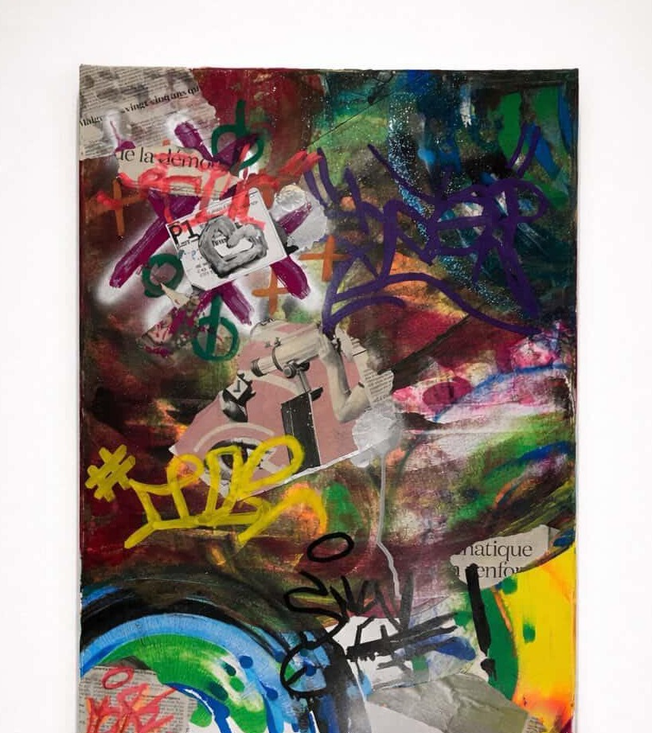

Mahé Barbry
Journaux collés, tags au spray, signes monétaires et graffitis qui se superposent dans un chaos construit. Les fragments de texte — « de la démocr… » — sont à moitié effacés, à moitié illisibles. Qu'est-ce qui reste visible dans le débat public ? Cette toile est une archive de la rue, dense et contradictoire — le bruit du monde distillé en image.
Pour toute demande d'information ou d'acquisition, envoyez un message. Mahé Barbry répondra dans les meilleurs délais.